GALLERY

 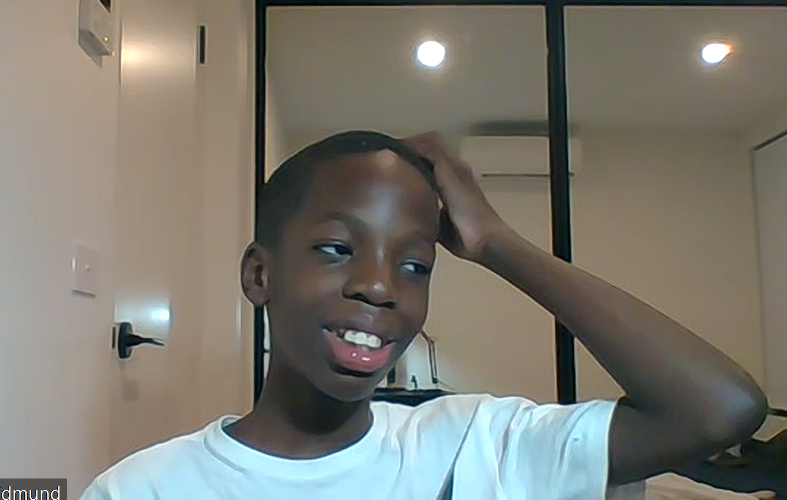
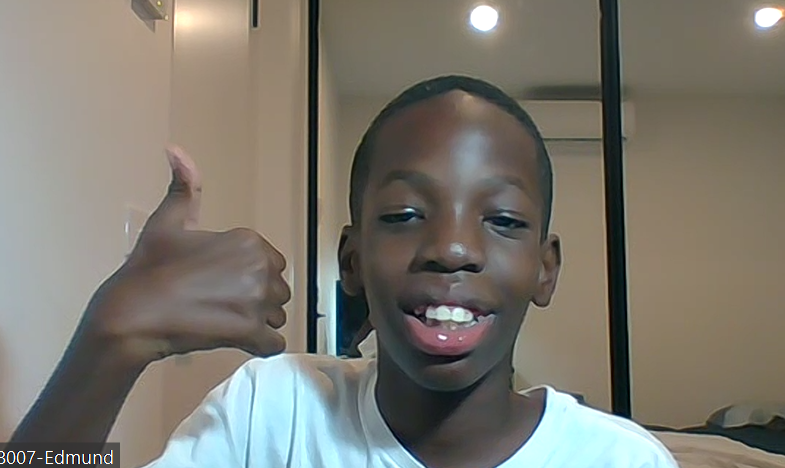
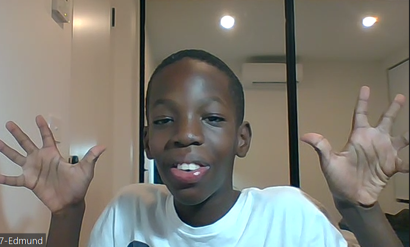
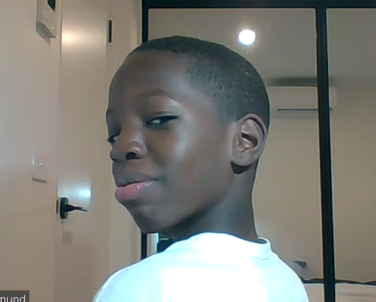
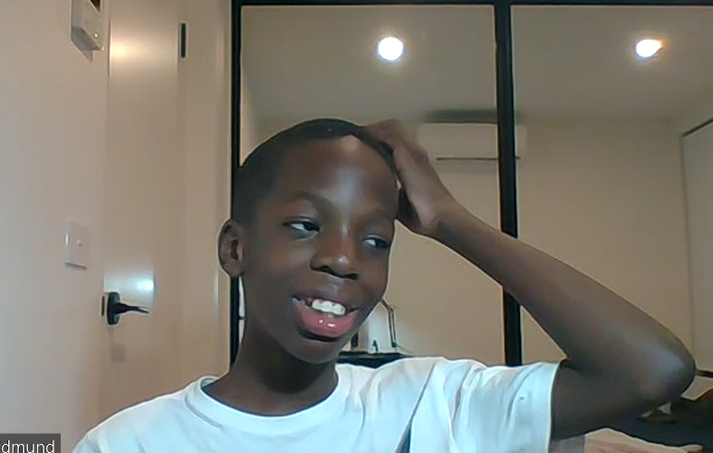
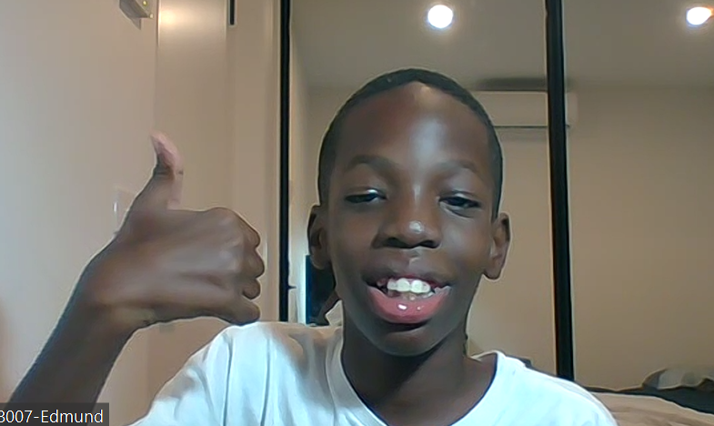
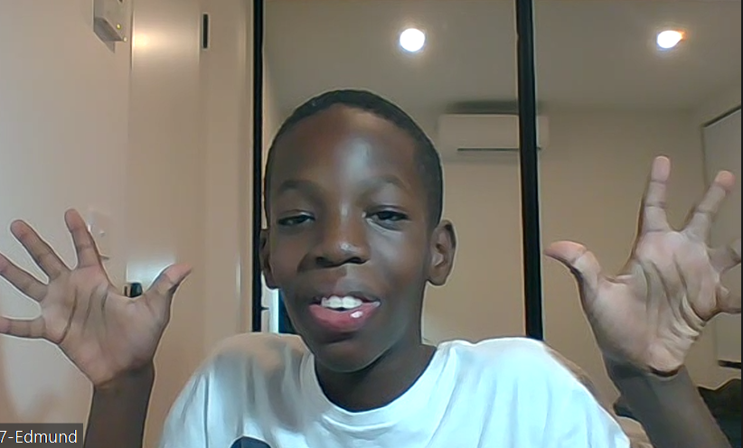
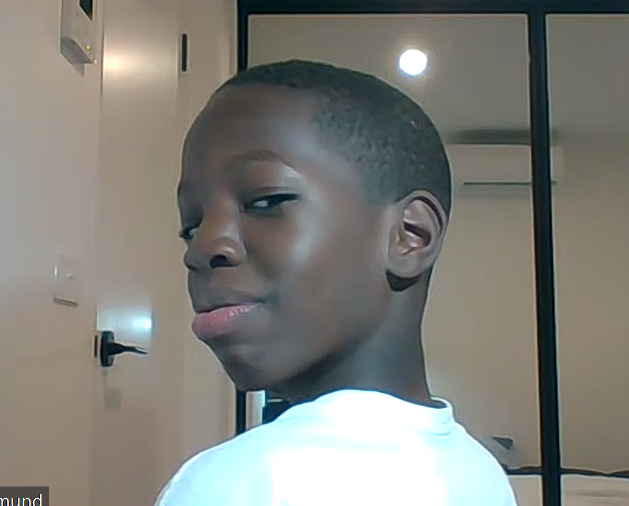
Hi everyone! I am Edmund Runcie Mike. I am 10 years old. I am very interested in coding, and my Mom supports me on it. I have a younger brother named Eric. Mom says Eric will soon join Bright Champs.
I live in Uyo, Nigeria. Uyo is a not-so-small town located in the land of promise, Akwa Ibom state. Also, with over 400,000 residents including me, this beautiful city stretches over 140 square miles (362km2). Additionally, it boasts of a growing oil industry, a collection station for palm oil and kernels, local trade centres, 1 brewery, a textile mill, a federal university and an airport, among others.
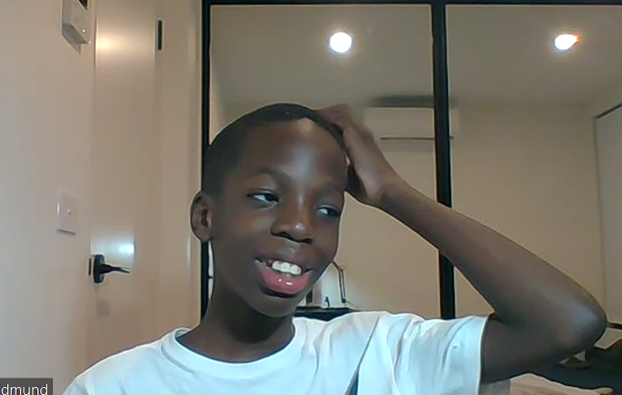
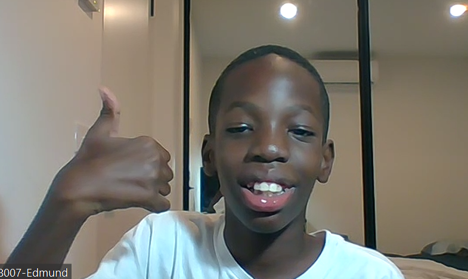
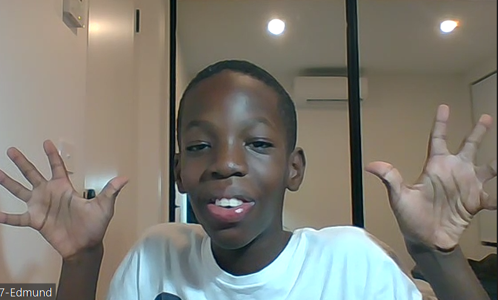
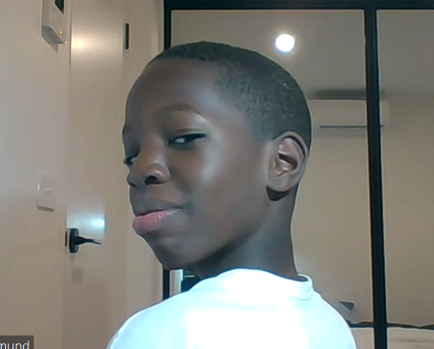

 My favorite sport is football. I play outside with Eric. The first rule looks at how the field is set up.
In the standard 11-a-side match match, the pitch must be 90 to 120 metres in length and 45 to 90 metres wide, with the touchlines being longer than the goal lines.
The field of play is made up of white lines all around the pitch and is then split in two by the halfway line down the middle which runs parallel to the goal lines.
The centre circle (where the game kicks off) is located at the midpoint of this line.
In each corner of the pitch there is a flag post and these help judge whether a ball has gone out for a corner / goal kick or a throw in.
At both ends of the pitch is a goal which is placed in the middle of the goal line. In front of both goals is a small goal area and around that is the larger penalty area.
In this whole area, the goalkeeper can use their hands and pick up the ball
The penalty spot is also marked in the penalty area and it lies 11 metres from the goal line.
While all of these lines and areas may sound complicated, after watching a single game of soccer you’ll have clear idea of how the pitch should be set up for a match.
My favorite sport is football. I play outside with Eric. The first rule looks at how the field is set up.
In the standard 11-a-side match match, the pitch must be 90 to 120 metres in length and 45 to 90 metres wide, with the touchlines being longer than the goal lines.
The field of play is made up of white lines all around the pitch and is then split in two by the halfway line down the middle which runs parallel to the goal lines.
The centre circle (where the game kicks off) is located at the midpoint of this line.
In each corner of the pitch there is a flag post and these help judge whether a ball has gone out for a corner / goal kick or a throw in.
At both ends of the pitch is a goal which is placed in the middle of the goal line. In front of both goals is a small goal area and around that is the larger penalty area.
In this whole area, the goalkeeper can use their hands and pick up the ball
The penalty spot is also marked in the penalty area and it lies 11 metres from the goal line.
While all of these lines and areas may sound complicated, after watching a single game of soccer you’ll have clear idea of how the pitch should be set up for a match.
Middle School: The Worst Years of My Life is a realistic fiction novel by James Patterson that serves as the beginning of Patterson's Middle School series.[1] Published in the United States by Little, Brown and Company on June 27, 2011, the book follows sixth grader Rafe Khatchadorian as he begins middle school and "copes with the awkwardness of adolescence: crushes, bullying, family issues"[3] as he attempts to break every school rule in the code of conduct. The book received critical acclaim from many reviewers and went on to spawn a sequel, Middle School: Get Me Out of Here!.
@copyright Edmund(creater) under guidance of Malleshwara Vinayak(Coding instructor-Brightchamps)